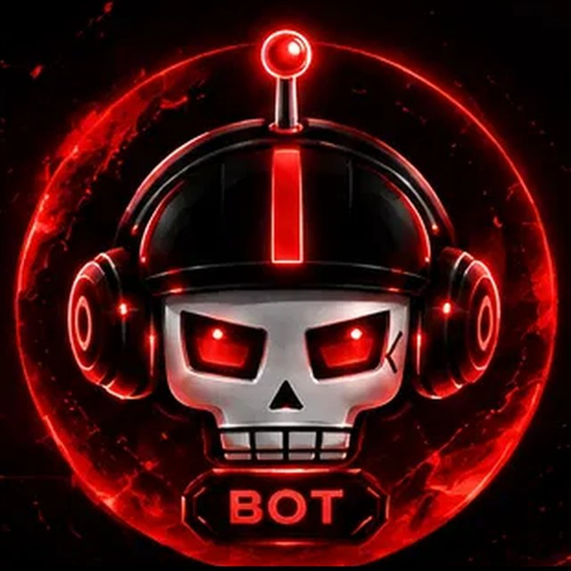

VenoxBot für deinen Chat.
Ein KI-Bot für Twitch-Chats und Discord-Server. Zuschauer schreiben !ask und ihre Frage, der Bot antwortet kurz und auf Deutsch.

Was der Bot macht
- Beantwortet Fragen, die mit
!askbeginnen, kurz und auf Deutsch. - Beantwortet auch mehrere Fragen in einer Nachricht, nummeriert.
- Hat Minispiele wie Würfel, Münze, Orakel, Duell, Lootbox, Zahlenraten, Quiz und lustige Sprüche. Alle zeigt
!ask spiele. Gewinne bringen Punkte für eine monatliche Rangliste (!ask rangliste). - Läuft im Twitch-Chat und auf Discord.
- Ist noch in Entwicklung. Funktionen und Regeln können sich ändern.
Für Streamer auf Twitch
Bot zum Moderator machen
Schreibe in deinem eigenen Chat /mod VenoX_Bot.
Beitritt im Bot-Chat
Geh in den Chat des Bots (twitch.tv/venox_bot) und schreibe dort !join akzeptieren. Damit bestätigst du die Nutzungsbedingungen. Der Bot erkennt dich an deinem Konto und bestätigt den Beitritt.
Fertig
In deinem Kanal kann jetzt jeder !ask nutzen.
Mit !leave im Bot-Chat verlässt der Bot deinen Kanal wieder.
Für Discord-Server
Den Bot holst du über einen Einladungslink auf deinen Server. Dafür musst du dort Admin sein. Fragen dazu beantworten wir auf dem Discord-Server.
Regeln für die Nutzung
- Zwischen zwei Fragen einer Person liegt eine Pause, standardmäßig 10 Sekunden. Streamer, Moderatoren und Server-Betreiber können sie im eigenen Kanal ändern. Zwischen zwei Minispielen liegen 5 Sekunden.
- Fragen dürfen höchstens 400 Zeichen lang sein.
- Es gibt Tageslimits für alle Kanäle und Server zusammen. Sie zählen die letzten 24 Stunden. Ist ein Limit erreicht, beantwortet der Bot keine Fragen, bis wieder Platz frei ist.
- Keine Beleidigungen, keine Werbung und keine Versuche, den Bot zu Verbotenem zu bringen.
- Antworten stammen von einer KI und können falsch sein. Wichtige Dinge bitte selbst prüfen.
Befehle
Alle Befehle für Zuschauer, Streamer und Server-Betreiber stehen auf einer eigenen Seite. Vorher bestätigst du einmal die Nutzungsbedingungen.
Datenschutz in Kürze
- Der Bot wertet nur Befehle aus, zum Beispiel
!askund!info. Andere Nachrichten werden nicht gespeichert. - Deine Frage wird zur Beantwortung an den KI-Anbieter Groq in den USA geschickt.
- Schreibe keine persönlichen oder vertraulichen Angaben in eine Frage.
- Auf der Befehle-Website meldest du dich mit Twitch an. Ein Passwort oder Twitch-Zugangsschlüssel wird nicht gespeichert.
Kontakt
Auf Twitch: twitch.tv/venox_794